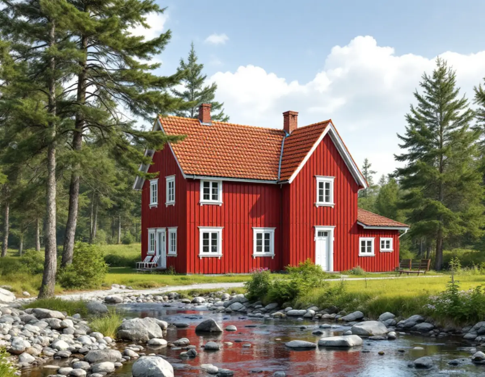
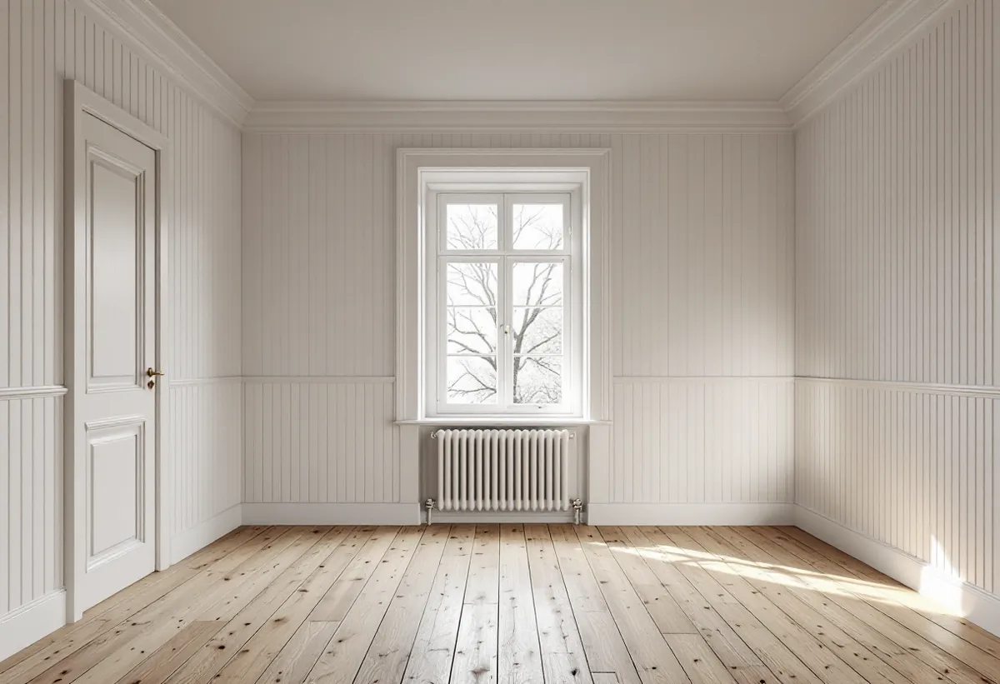

Platsbesök
Vi tittar på fasad och interiör och gör prov för att se om det är slamfärg, oljefärg, limfärg eller modern färg.
Rött och vitt går igen i Tyresös äldre hus, från gårdarna och kvarnmiljön vid Uddbykvarn till 1950-talets fritidshus. Inomhus kan samma hus ha färglager som är lika värda att spara som fasaden. Geal Entreprenad AB tar målningsuppdrag ute och inne i hela kommunen, med gratis platsbesök och skriftligt kostnadsförslag.

Stockholms läns museum inventerade 2008 bebyggelsen i Solberga och delar av Raksta inför detaljplaneläggning. Rapporten beskriver hus efter hus med rödfärgad locklistpanel och vitmålade knutar, lister, fönster och foder. Byggnaden som kallas Telegrafen vid Uddbykvarn, ett timmerhus från tidigt 1800-tal, har just den kombinationen, liksom flera av gårdarnas bostadshus och uthus.
Även 1950-talets fritidshus finns med. Ett välbevarat exempel beskrivs med röd stockpanel, gröna lister och foder och tvåkupigt tegeltak. Samtidigt konstaterar rapporten att permanentningen pågår och att en del hus är helt ombyggda eller nybyggda.
För flera av de äldre byggnaderna föreslår museet skyddsbestämmelser som omfattar fasad- och takmaterial och uttryckligen den röda färgsättningen. Det säger något om hur tungt kulören väger i den här miljön.

Riksantikvarieämbetet beskriver röd slamfärg som en matt, fuktöppen färg som är lätt att underhålla: det räcker ofta att borsta bort lös färg och stryka på nytt. Men myndigheten är lika tydlig med begränsningen. En slamfärgsmålad yta ska bara målas om med slamfärg, och har man en gång bytt till exempelvis latex-, alkyd- eller linoljefärg går det inte att återvända, även om den gamla färgen tas bort.
Har slamfärgen tidigare blandats med trätjära behöver tillsatsen normalt finnas med även vid ommålningen, annars blir vidhäftningen och kulören ojämn. De vita fodren och fönstren är däremot ofta målade med linoljefärg eller en modern täckfärg, och de behöver sin egen förbehandling.
Säsongen spelar också roll. Riksantikvarieämbetet anger april till september som period för utomhusmålning i Mellansverige, och för linoljefärg maj till augusti, med torrt trä och utan direkt solsken på den yta som målas. Ett hus i skuggigt läge under tallar behöver därför planeras in när veckorna är torra, inte bara när ställningen är ledig.
När Solberga gård renoverades till permanentstandard bevarades äldre material inne, foder och lister kompletterades med samma utseende som de befintliga och den äldre färgsättningen togs fram, enligt museets rapport. Det är ett bra exempel på att ett äldre hus kan få modern standard utan att interiören målas över.
Riksantikvarieämbetet skriver att det inte alltid är nödvändigt att måla om helt. Är ytorna i gott skick frånsett mindre skador och smuts räcker det ofta att tvätta för gott, alltså rengöra milt och bättra skadorna med samma färgtyp. Metoden är enligt myndigheten ofta billigare, ger ett resultat som är lättare att renovera och sparar äldre målerihantverk.
I äldre hus kan taken vara målade med limfärg, som var vanlig som takfärg fram till 1950-talet. Limfärg är känslig för fukt och passar inte i kök eller badrum, och den ska i första hand målas om med limfärg. Ska huset samtidigt byggas om invändigt kan målningen ingå i en villarenovering.
Tyresö kommun skriver att ommålning, nytt tak eller nya fönster på ett en- eller tvåbostadshus inte kräver bygglov, men att ändringar alltid ska göras varsamt och anpassas till byggnadens värden. Lov krävs alltid om fastigheten ligger i ett kulturhistoriskt särskilt värdefullt område eller om byggnaden själv är kulturhistoriskt särskilt värdefull. Sådana områden kan vara utpekade i översiktsplanen, kulturmiljöprogrammet eller detaljplanen.
Tyresö slott med omgivning är riksintresse för kulturmiljövården, och delar av Solberga och Raksta ligger nära. Ska ett rödfärgat hus där få en annan kulör är det klokt att fråga kommunen först. Byggs en gammal stuga till, se snickare i Tyresö för hur till- och ombyggnaden kan planeras.
Vi tittar på fasad och interiör och gör prov för att se om det är slamfärg, oljefärg, limfärg eller modern färg.
Vi stämmer av om huset ligger i ett kulturhistoriskt värdefullt område och vilken färgsättning det hade.
Arbete ute och inne specificeras för sig, med färgtyp, underarbete och antal strykningar.
Borstning eller skrapning ute, mild rengöring och bättring inne där det räcker.
Färgen stryks i den ordning och med de torktider färgtypen kräver.
Vi går igenom resultatet tillsammans och bättrar där det behövs.
Skatteverket ger rotavdrag för målning och tapetsering inomhus och för målning av fasader och fönster på ett småhus, men inte för målning av staket och murar. Avdraget är 30 procent av arbetskostnaden, högst 50 000 kr per person och år, och tillsammans med rutavdrag högst 75 000 kr. Färgen är material och ingår inte.
Bor du i bostadsrätt gäller avdraget bara arbete inne i lägenheten. Geal drar avdraget direkt på fakturan.
Utomhus styrs kostnaden av hur mycket lös färg som måste bort, hur mycket panel som behöver bytas och hur många fönster och foder som ska målas i en annan färgtyp än fasaden. Inomhus är det skillnad på att bättra och att måla om helt. Platsbesöket är gratis och du får ett skriftligt kostnadsförslag.
Fasad, fönster och invändig målning.
Målare i Stockholm →Takbyte, takbesiktning och plåtarbeten.
Takläggare i Tyresö →Solberga, Raksta och Brevik.
Takrenovering i Tyresö →LTA-avlopp, källarbadrum och golvbrunn.
Badrumsrenovering i Tyresö →Startbesked, utstakning och slutbesked.
Byggföretag i Tyresö →Timmerhus, fritidshus och villor i Tyresö.
Fasadrenovering i Tyresö →Gamla bågar och beslag i Tyresö.
Fönsterbyte i Tyresö →Fritidshus som byggts om till villor.
Golvläggare i Tyresö →Stugor som blir helårshus.
Köksrenovering i Tyresö →Stuprör, rännor och beslag i Tyresö.
Plåtslagare i Tyresö →